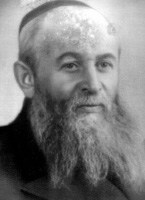

The Chassid Who Conquered Ponovezh
Lithuania, the place that had always been the stronghold of the Misnagdim. * Over the years Chassidishe communities were established there, mainly numerous Lubavitcher ones. A number of branches of Tomchei T’mimim were established as well. * The following is a description of the Lubavitcher communit

The rav of the town, Rabbi Yosef Kahaneman (1886–1969), who was the local rosh yeshiva and later founded Yeshivas Ponovezh in B’nei Brak, loved R’ Lisson and called him “My Shmuel Hershele.” R’ Shmuel Tzvi would occasionally be called for a meeting in R’ Kahaneman’s house to discuss timely matters. His opinion was always heard and reckoned with.
Not only that, but the rav’s spacious home was on the same alleyway where the Chabad shul was located. R’ Kahaneman would sometimes daven there on Shabbos and remain to listen to the Tanya shiur given by R’ Lisson. On Simchas Torah he would also join in the hakafos held by the Chassidim. He would remain standing next to the prayer lectern and watch with demonstrable appreciation for the entire event presided over by R’ Lisson, with a smile of nachas on his face.
THE SHOCHET WHO BECAME A WEALTHY MAN
R’ Lisson was born in Verkhnodniprovsk in the Ukraine around 5742/1882. His father, R’ Avrohom, was a great-grandchild of one of the Baal Shem Tov’s colleagues in the period before he was revealed as a tzaddik. R’ Avrohom became close to Lubavitch after he married the daughter of R’ Avrohom Yitzchok Kotz, an ardent Chassid of the Tzemach Tzedek.
They say that R’ Yitzchok Kotz worked in sh’chita. He once had a yechidus with the Tzemach Tzedek, who told him he would become a wealthy man. When he returned to his home in Chachnik, even before he reached the town, the squire of that area met him and said: Yitzchok, you are an honest man and I trust you, which is why I am going to give you an important job. I will send thirty wagons of sugar with you to Moscow so you can sell them.”
He did the job for which he earned a very large amount of money which he used to deal in business. He quickly became a lumber merchant and became a wealthy man.
R’ Yitzchok bought a large courtyard with a number of houses in Verkhnodniprovsk where he and his married children lived, as well as other families who rented homes from him.
He married off one of his daughters to R’ Shmuel Tzvi Lisson, the father of R’ Avrohom Lisson of Kfar Chabad. He married off another daughter to R’ Moshe Dovber Gansbourg, the father of Itzke Gansbourg of New York.
His son-in-law, Dovber, related that he would daven at length and deliberately ate bread that wasn’t fresh in order to break the midda of taava.
CHASSID, MAAMIK, AND LAMDAN
R’ Shmuel Tzvi was sent to learn in Tomchei T’mimim in Gorodishche (Yid. pronunciation Horodoshitz). This yeshiva was a branch of the main yeshiva in Lubavitch and was run by Rabbi Zalman Havlin. He learned by R’ Avrohom of Zembin (Landau).
In 5660/1900, he began learning in Lubavitch itself. He learned there for eight years and was very diligent in his learning of Nigleh and Chassidus. His peers later said about him that he was not only a great lamdan but also an outstanding Chassid. R’ Shmuel Tzvi was knowledgeable in all four sections of Shulchan Aruch and received smicha for rabbanus from noted rabbis of the time. He also knew all of Mishnayos by heart.
When he was called upon to serve in the czar’s army, he had yechidus and asked the Rebbe Rashab for a bracha and advice on how to be exempt. The Rebbe told him that two weeks before he was called up, he should tie two of his fingers together and untie them only on the day he had to show up.
R’ Shmuel Tzvi did as the Rebbe told him and the army medics decided he had a problem with his hand, which made him unfit to serve.
When he returned to Lubavitch, the Rebbe told him to tie his fingers together again for two weeks and the fingers would return to their place. R’ Shmuel Tzvi did as he was told and his fingers were miraculously healed.
Chassidim said that although the Rebbe advised many bachurim on how to conduct themselves when called up to the army, it was exceedingly rare for him to say how to get things back to the way they had been previously. This shows how the Rebbe Rashab had a special regard for R’ Shmuel Tzvi.
MASHPIA IN PONOVEZH
The Rebbe sent him to Ponovezh even before he married. He was given explicit instructions to marry someone from that town and to continue living there and to spread Chassidus there. His son, R’ Avrohom described this special shlichus:
“The Rebbe Rashab told him to marry in Ponovezh and then to start creating a Lubavitcher atmosphere there and establish a Chabad shul, to review maamarim, establish a shiur in Tanya and initiate other activities connected with spreading Chassidus.
“He fulfilled this shlichus in the finest way. He married and established a beautiful Chassidishe community along with a Chabad shul, and he became the official mashpia of all of Anash in the town.
“The Jews of the town, no matter their religious outlook and age, loved him and gave him the title ‘Der Chassid’l.’ Despite the distractions of earning a living, he was devoted to his shlichus and created a Chabad nucleus. Thanks to him, the Chabad movement flourished within the Jewish community of Ponovezh that numbered about 15,000 people.
“Over time, the Chabad community grew and there were two Chabad shuls. All the people who attended these shuls admired him exceedingly.”
After he established a large Chassidishe k’hilla, he took on an important task, i.e. being mekasher the Jews of Ponovezh to the Rebbe Rayatz. He devoted time and much effort so that as many Jews as possible would write to the Rebbe.
In the years that the Rebbe lived in Riga, he organized a large group every year that went to Riga. They visited the Rebbe’s court, took part in the davening and farbrengens and even had yechidus. R’ Shmuel Tzvi organized the trip which he advertised as an “organized trip to Riga.” Some, in fact, went to visit relatives and such while the Chassidim went to the Rebbe. All of them, with no exception, eventually ended up at the Rebbe’s court.
R’ Shmuel Tzvi’s house was known as place of hospitality. Lubavitchers who went to Ponovezh for any reason knew that his home was open at all times. Around Ponovezh were about ten villages in which Lubavitcher Chassidim lived. The rabbanim of the villages of Kupishok, Skapishok, Panidal, Abel, Rakishok and others had attended Lubavitcher yeshivos. When they came to Ponovezh to arrange their affairs, they stayed with the Lissons.
The famous Chassid R’ Itche Masmid, may Hashem avenge his blood, traveled to several countries as the Rebbe’s emissary, and when he went to Ponovezh he stayed at R’ Shmuel Tzvi’s house for a few days. A farbrengen was held in his honor in the “Kloiz of Anash,” as the Chabad shul was called.
“I remember that I put up flyers in about fifteen shuls and a large crowd showed up. Many Jews who were not Chassidim, after hearing a maamer Chassidus from R’ Itche, realized that he was an outstanding talmid chochom and they rushed to grab shirayim (lit. leftovers – a custom of other Chassidic groups to eat from the leftover food of the tzaddik) from what he tasted at the farbrengen,” recalled R’ Avrohom Lisson.
“I will mention a singular practice that typified my father, which is etched in my memory. During hard times he would stand and begin singing a serious niggun with lengthy and deep stanzas. He did not do this merely to be relieved of the stress; this was an intricate part of Chassidishe life in which one knows and feels that a Chassidishe niggun has the essential vitamins and is ideal for arousing the soul and the souls of one’s household and environment with faith and trust.”
MY FATHER’S SHABBOS
R’ Avrohom Lisson waxes nostalgic as he replays the memories of his father’s home – family memories of Shabbos in a rarefied atmosphere, davening at length and the hospitality. When he talks of those days, his eyes well up.
“From as early as I remember myself, I would prepare my father’s clothing on Erev Shabbos. Before he came home from the store where he worked, I had already cleaned his sirtuk, his winter coat and his hat.
“My father closed the store several hours before Shabbos. In Ponovezh there were large flour mills that supplied flour to all the Baltic States. My father, along with my mother Yenta, ran a store in which the main product was flour. They sold ten types of flour in large quantities. Nevertheless, my father was immersed in the shul and shiurim and would arrive at the store late.
“On Friday afternoon he would close the store in honor of the approaching Shabbos. If there were many customers at the time, he would announce that they had to leave immediately. Because of him, other shopkeepers also quickly closed their stores.
“Upon his return home, he would go to the kitchen to check that the food was prepared. He would open a drawer in the bookcase with a key attached to the pocket of his suit and put a handful of coins into the ‘Rabbi Meir Baal HaNes – Kollel Chabad Yerushalayim’ pushka.
“When my mother lit the Shabbos candles, he would stand at a distance from the table and wait to answer ‘amen’ to her bracha.
“On his way to shul, he was rushed and spoke little. After Mincha and Kabbalas Shabbos, before the recital of K’Gavna, he gave a shiur in Tanya. Most of the congregation would sit around the long table. I, a little boy, would take thirty Tanyas out of a closed box and give them out and then collect them after the shiur which lasted about an hour.
“He said the Tanya in a powerful drawn out voice, a voice comprised of a mix of strength and sweetness which could be heard throughout the Kloiz. He definitely penetrated the inner soul powers of his listeners.
“My father would take a long time over his davening on Shabbos and Yom Tov in general, and especially on Friday night. I remember that I and my younger brother Yechiel Michel, may Hashem avenge his blood, would stay in the empty shul and wait for him to finish davening. [It should be noted that R’ Avrohom inherited this practice from his father. The residents of the Kfar know that when they finish their Friday night meal, he is still davening.]
“Aside from my father, who would be singing his davening in the southeastern corner of the shul, there was nobody in the shul. When he finished davening, he would say a hearty ‘Good Shabbos’ to us and we would walk home together, slowly. On the way, he would discuss matters of derech eretz and answering amen properly, and talk about davening slowly. He would test us to see whether we knew how to pronounce the words of the davening properly. He also spoke to us about forgoing wasting time on Shabbos and about reviewing T’hillim or Pirkei Avos by heart instead. He even promised to pay us for every chapter we memorized, and he kept his promise. Sometimes, he would explain an educational point in the parsha based on what he heard from the Rebbe Rashab.
“On a Shabbos when he found a guest, he would not spend a long time davening but would hurry to finish. On the way home, he would inquire about the welfare of the guest and the town he came from. Upon arriving home, he would greet each member of the house with ‘Good Shabbos’ with a happy face.
“Kiddush was made in a loud voice and special emphasis. It was always slow. During the meal he would sing Azamer B’Shvachin with the children and the niggun known as L’chat’chilla Aribber, and other Lubavitcher niggunim. As someone born in the Ukraine, he knew Chassidishe niggunim in this language, most of them from the Shpole Zeide. Now and then he would tell us a story, a horaa or a practice from R’ Gronem, Rashbatz or R’ Avrohom of Zembin, the mashpiim he learned by in Lubavitch and Horodoshitz.
“My father’s bedtime Shma was lengthy. He would place a foot stool on the table and lean on it while standing so as not to nod off. To keep alert he would lightly bang with his heel on the floor and change his place every so often, from the table to the sideboard, and from there to the windowsill and back again. He did this throughout the time that it took him to finish the Shma, which was said with great concentration.
“On Shabbos morning he would get up very early, whether it was winter or summer. Later on he would give me a towel for me to take to the mikva. Even though there was an eiruv in Ponovezh, he did not carry on Shabbos. We walked together to the bathhouse that was built on the banks of the Nevezis River and immersed in the mikva. After drinking tea he would give a shiur in Shulchan Aruch Admur HaZakein in the Kloiz and then another shiur in Chassidus.
“The davening began at nine, but my father continued learning Chassidus and only began davening later. He put a lot of energy into the service of the heart, in pronouncing the letters, with a chayus and d’veikus, and all with great deliberativeness and usually standing. His face was to the wall and he leaned against a shelf where his Siddur lay along with an open volume of Chassidus.
“Towards the end of the davening, he prepared dozens of volumes of T’hillim that were open to that day’s date, piled one on top of the other. He went over to each person and pressed into his hands the open T’hillim and urged him to say the daily portion. This ‘personal service’ was done in order to encourage the Rebbe Rayatz’s takana to say the daily portion of T’hillim. At the end of the davening, he would teach a chapter of Mishnayos. He did this routine, with the T’hillim and Mishnayos, on weekdays too.
“After the people finished saying T’hillim, they would go have their Shabbos meals with their families, while my father went back to his davening which lasted a long time. Only after he finished davening did we return home with him for the meal in our house.
“Shabbos afternoon, my mother would enthusiastically read the parsha aloud in Tzena U’R’ena and we children would crowd around her and eagerly listen to the beautiful stories that she read to us.
“My father’s Chassidishe Shabbos, as well as all his activities done on shlichus from our Rebbeim, were terminated in one fell swoop [by the evil ones].”
HIS LAST VISIT TO THE REBBE
On the eve of the outbreak of World War II, R’ Shmuel Tzvi Lisson went on a fundraising trip to European countries for a yeshiva based in Ponovezh in which most of the talmidim were from Lubavitcher communities all over Lithuania. Along his journey, he traveled to Paris, where he founded an elementary school with the encouragement and help of R’ Zalman Schneersohn. In addition to raising money, he also served as a teacher of young children.
13 Cheshvan 1939 is when the political assassination took place that served as the excuse for the conflagration of what eventually became a world war. Herschel Grynszpan murdered a German embassy official. He was 17 and had been born in Germany to Polish parents. He left Germany for France and then heard that his parents and other Polish Jews had been expelled from Germany. Thousands of these Jews were sent to the German border shared with Poland, but Poland refused to take them in. They remained on the border. This was the impetus for Herschel to take revenge on the Germans.
The Germans found in this a good reason to take revenge on the Jews and launched the pogrom called Kristallnacht. The French government, having been influenced by the Germans, began imposing restrictions on their Jewish residents. Until that point, they had ignored the many Jewish refugees who had arrived in France, but now they began placing severe limitations on the Jewish refugees.
R’ Shmuel Tzvi, who was in France without a proper visa, was in a dilemma. All his attempts at obtaining a visa failed. He had to leave the country and return to Ponovezh. He went via Otvotzk where the Rebbe Rayatz was staying and had yechidus. This was his last visit to the Rebbe, as the war began a few months later.
The Nazis attacked the Lithuanian army in the summer of 1941 and began heavily bombing the country. R’ Avrohom Lisson relates:
“Our house was full of Jews who sought advice. They wanted to know whether to flee Lithuania or remain there. It was hard to know what to do since rumors about the German oppressive attitude towards Jews were not clear. We knew they were causing tzaros, but the communists also murdered many Chassidim or sent them to Siberia. It was hard to decide how to proceed.
“The house constantly shook from the nonstop bombs. I wanted to flee and asked my father. He said to me, ‘You are no longer a child (I was 18) and it is hard for me to answer you. Decide whatever you decide and may Hashem protect you.’ Since my father did not say no, I began preparing to leave.
“On the third day since the outbreak of hostilities, I took a train to a destination unknown. I left behind my parents, my brothers and sisters, along with the 15,000 Jews of Ponovezh among whom I grew up. I never saw my parents again.
“About two months later, on Rosh Chodesh Elul 5701/1941, the Jews of Ponovezh were rounded up in a small airport near the town and all were shot. Only a few of them escaped, including myself and some of my older brothers who, in order to escape serving in the Lithuanian army, had left for South Africa a few years before the war.”
***
The story of R’ Shmuel Tzvi Lisson is the story of the Lubavitcher k’hilla in Ponovezh which he started, on shlichus of the Rebbe Rashab. May this article be a memorial to these Chassidim who were degraded and murdered by the cursed Nazis and their collaborators.
WE ARE EATING FOR THE SAKE OF HEAVEN
R’ Shmuel Tzvi Lisson’s younger brother, R’ Yechiel Michel, followed his brother and also learned in Lubavitch. It was 5670/1910, two years after his brother finished learning in the yeshiva. He was described as a mara levana, i.e. a lighthearted individual. He is also described as being “very Chassidish.”
Rabbi Zalman Shimon Dworkin, a talmid in Tomchei T’mimim in those days, related that R’ Yechiel Michel would ask for silence when they ate their meals in the yeshiva dining room and would loudly say, “Do not forget that we are eating for the sake of Heaven.”
He learned in Lubavitch for three years and then established a Chassidishe home. Sadly, he died in 5680/1920, at the young age of 33. He was one of the minyan of young Chassidim who died in 5680, shortly after the passing of the Rebbe Rashab.
Shneur Zalman Berger. "The Chassid Who Conquered Ponovezh." Beis Moshiach, no. 863 (January 3, 2013).